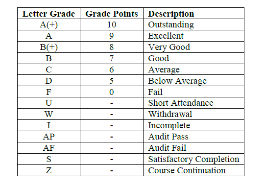

What is the procedure for branch change?
The option for branch change is given to the second year meritorious students only. The change of branch among the students having similary eligibility qualification may be allowed on the basis of merit of B.Tech first year examination.The branch change is not applicable to NRI students and the admissions granted on supernumerary basis such as Government nominee students, etc. Maximum number of students permitted to change the branch shall be top 5% of the students sanctioned intake in first year in their respective branch Branch change in second year shall be strictly in accordance with the branch merit list prepared by the university on the basis of cumulative grades (CGPA) obtained by a student in the first year. In case two or more students secure equal grades, inter-se-merit of such students shall be determined as follows: Firstly, by the total marks obtained in Mathematics in each semester. If number remains equal, then marks scored in Physics shall be taken into account for finalizing the merit. For more detailed and precise information visit MMMUT
What is an Audit Course?
What are the credits?
What are the seminar subjects?
Every department will prescribe Seminar as audit requirement for the B. Tech. Degree. Seminar is a course wherein under the guidance of a faculty member a student is expected to do an in-depth study in a specialized area by doing survey of published technical literature, understanding different aspects of the selected topic and arriving at a status report. While doing a seminar, the student is expected to critically analyze works of various authors/researchers, learn the investigation methodologies, study concepts, techniques and the results presented in these papers, and present a seminar report. It is mandatory to give a seminar presentation of stipulated duration before a panel constituted for the purpose by the department.
What is the durstion for industrial training?
The duration for industrial/practical training of project based type preferably will be of 60 to 75 days duration after semester VI which could be under Cooperative Education Model (CO-OP Model). If student could not be assigned for 60 to 75 days project based training in industry, he/she has to complete 30 days industrial training along with 30 to 45 days society/ commercial/industrial problem related minor project under the supervision of designated faculty supervisor from his/her department of University. The student will submit a report on the industrial/practical training and/or minor project report to the Head of Department for evaluation through a committee of faculty members constituted by the Head of Department.
What is SGPA?
Points Secured in the Semester = Σ (Course Credits x Grade Point) for courses in which A(+) to D grade has been obtained Total Credits Registered in the Semester Excluding Audit Courses= Σ (Course credits) for courses in which A(+) to D grade has been obtained SGPA = Points secured in the semester in all passed courses (A(+) to D Grade) Total Credits registered in the semester excluding audit courses
What is CGPA?
Cumulative Points secured in All Passed Courses = Σ (Course Credits x Grade Point) for courses in which A(+) to D grade is obtained Cumulative Total Credits Excluding Audit Courses = Σ (Course credits) for courses in which A(+) to D grade is obtained CGPA = Cumulative Points secured in all passed courses (A(+) to D Grade) Cumulative total credits excluding audits courses
Difference between SGPA and CGPA?
Semester Grade Point Average (SGPA) which is the Grade Point Average for a semester, and Cumulative Grade Point Average (CGPA) which is the Grade Point Average for all the completed semesters at any point in time considered cumulatively.
what is the minimium credit requiremnet to pass the B.Tech course?
The curriculum for any B.Tech. Programme of study has been designed with total minimum credits of 180 and total minimum 20 credits of audit courses for those admitted in 1st year of B.Tech. Program. The minimum credit requirement will be 130 and total minimum 14 credits of audit courses for lateral entry in II year of B. Tech.
Is joining NCC or NSS is necessary?
One of the three activities, National Cadet Corps (NCC) or National Sports Organization (NSO) or National Social Service (NSS) training is compulsory for all the Undergraduate students. A student who has not completed the NCC/NSO/NSS requirements in first four semesters will not be permitted to continue the B.Tech. Degree Programme.
what is General Profeciency(GP)?
The other general proficiency activities will include Games/Sports/Cultural/Literary/ Practical/Field Activities/Industrial visit/Extension Lectures. It will be carried out beyond class hours
what is the grading System ?
The academic performance evaluation of a student will be according to a Letter Grading system based on class performance of students. 